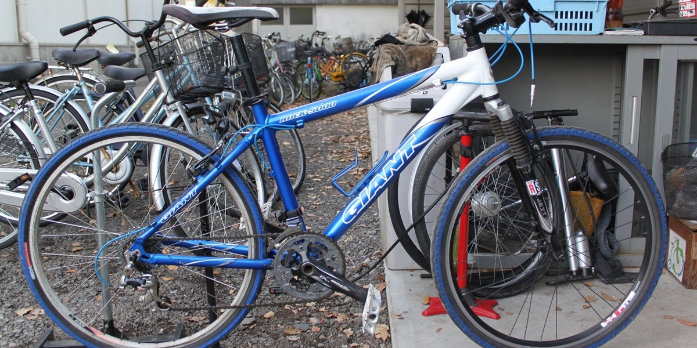

愛用自転車
Giant Bicycles ROCK5000（紛失中）
【情報提供をお願いします】
この青のマウンテンバイクがなくなりました。
車体特徴
- 型式：Giant Bicycles ROCK5000
- 車色：青/白
- タイヤ・サドル：青
紛失状況
- 場所：佐賀駅駐輪場（西友の東）No.22
- 時間：7月31日朝7時半～23時半
- 補足：
かけていたワイヤー錠は足元に置かれる
駐輪料金（おそらく100円）は支払い済み
5年前、チャリさがさいせいの活動によって、スクラップ寸前の状態から甦らせた自転車。
手入れをしながら大切に乗り続け、先日も新品のタイヤを履かせたばかりです。
さらに、人に会う度に自身の活動の成果としてこの自転車を紹介していました。
また、かたや軽度ながら交通事故の後遺症がある左足。
長時間の立ち歩きは少々堪えますが、この自転車なら左足を楽にしてくれています。
なくなった日の晩は途方にくれながらも、月明かりを頼りに1時間かけて帰宅。
この自転車が実現してくれたフットワークを改めて噛み締めました。
情報提供をお願いします_ _ 。
代用自転車
Araya
日頃、お世話になっている方が気にかけてくださり、乗られていない自転車を貸してくださいました。